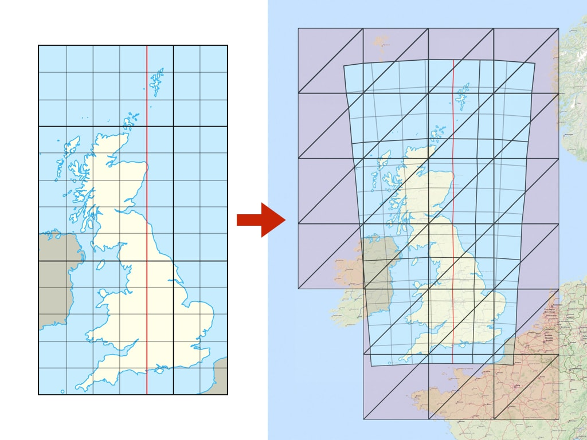
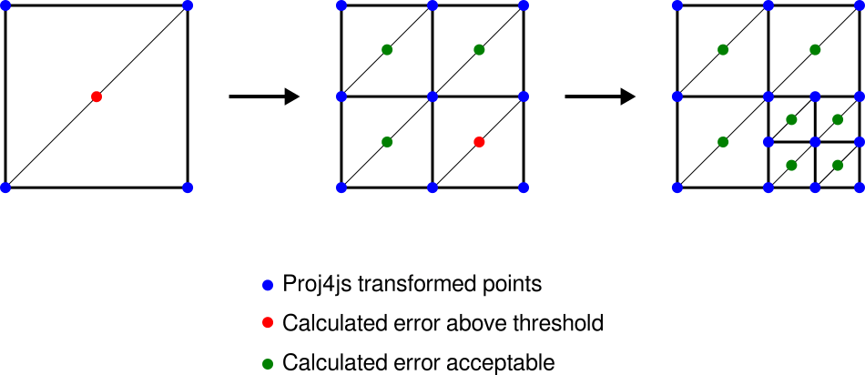
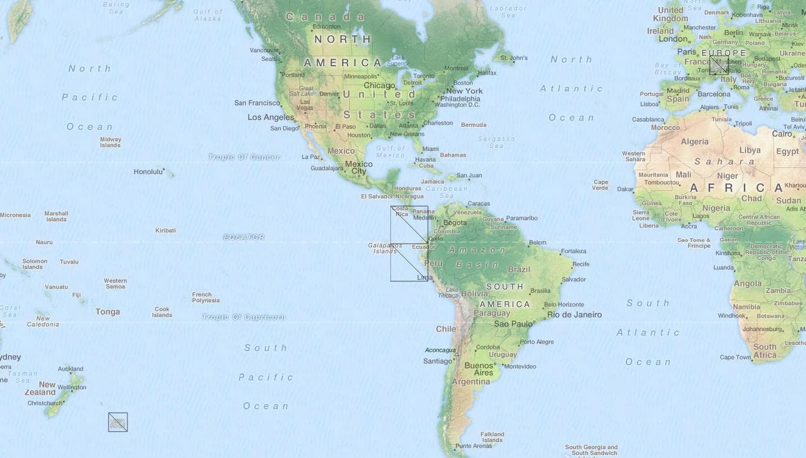

OpenLayers can display raster data from WMS, WMTS, static images, and many other sources in a different coordinate system than delivered from the server. In cases where the source projection differs from the map view projection, source data can be reprojected on the client (in the browser).
OpenLayers 能够以与服务器提供的数据不同的坐标系，来显示来自 WMS、WMTS、静态图像以及许多其他数据源的栅格数据。当数据源的投影与地图视图的投影不一致时，可以在客户端（浏览器中）对源数据进行重投影。
OpenLayers comes with built-in support for transforming coordinates (and reprojecting rasters) between a handful of projections or coordinate reference systems.
OpenLayers 内置支持在少数几种常用投影或坐标参考系统之间转换坐标（以及重投影栅格）。
The built-in reprojection support applies to the following projections:
内置重投影支持适用于以下投影：
WGS 84 / Geographic (EPSG:4326)
WGS 84 / 地理坐标系（EPSG:4326）
WGS 84 / Web or Spherical Mercator (EPSG:3857)
WGS 84 / Web 或球形墨卡托（EPSG:3857）
WGS 84 / Universal Transverse Mercator (EPSG:32601 through EPSG:32660 and EPSG:32701 through EPSG:32760)
WGS 84 / 通用横轴墨卡托 / UTM（EPSG:32601 至 EPSG:32660 以及 EPSG:32701 至 EPSG:32760）
For transforms between other, non-built-in projections, the Proj4js library can be used.
对于其他非内置投影之间的转换，可以使用 Proj4js 库。
Transformation of the map projections of the image happens directly in a web browser. The view in any Proj4js supported coordinate reference system is possible and previously incompatible layers can now be combined and overlaid.
图像地图投影的转换直接在 Web 浏览器中进行。 现在可以以 Proj4js 支持的任意坐标参考系统进行视图展示，此前互不兼容的图层现在也可以合并并叠加在一起显示。
The API usage for built-in projection support involves specifying the projection identifier on the source and the view. String EPSG codes can be used to identify the projections:
使用内置投影支持的 API，只需在数据源（Source）和视图（View）上分别指定投影标识符即可。可以使用字符串形式的 EPSG 代码 来标识投影：
import Map from 'ol/Map.js';
import TileLayer from 'ol/layer/Tile.js';
import TileWMS from 'ol/source/TileWMS.js';
import View from 'ol/View.js';
const map = new Map({
target: 'map',
view: new View({
projection: 'EPSG:3857', // here is the view projection 此处为视图投影
center: [0, 0],
zoom: 2,
}),
layers: [
new TileLayer({
source: new TileWMS({
projection: 'EPSG:4326', // here is the source projection 此处为源数据投影
url: 'https://ahocevar.com/geoserver/wms',
params: {
'LAYERS': 'ne:NE1_HR_LC_SR_W_DR',
},
}),
}),
],
});
If a source (based on ol/source/TileImage or ol/source/Image) has a projection different from the current ol/View’s projection then the reprojection happens automatically under the hood.
如果数据源（基于 ol/source/TileImage 或 ol/source/Image）具有与当前 ol/View 不同的投影，重投影将在后台自动进行。
The easiest way to use a custom projection (one that doesn't have built-in support) is to add the Proj4js library to your project and then define the projection using a proj4 definition string. It can be installed with
使用自定义投影（没有内置支持的投影）最简单的方法是将 Proj4js 库添加到您的项目中，然后使用 proj4 定义字符串来定义该投影。可以通过以下命令安装：
npm install proj4
Following example shows definition of a British National Grid:
以下示例展示了英国国家网格坐标系（British National Grid） 的定义：
import proj4 from 'proj4';
import {get as getProjection} from 'ol/proj.js';
import {register} from 'ol/proj/proj4.js';
proj4.defs('EPSG:27700', '+proj=tmerc +lat_0=49 +lon_0=-2 +k=0.9996012717 ' +
'+x_0=400000 +y_0=-100000 +ellps=airy ' +
'+towgs84=446.448,-125.157,542.06,0.15,0.247,0.842,-20.489 ' +
'+units=m +no_defs');
register(proj4);
const proj27700 = getProjection('EPSG:27700');
proj27700.setExtent([0, 0, 700000, 1300000]);
To switch the projection used to display the map you have to set a new ol/View with selected projection on the ol/Map:
要切换用于显示地图的投影，您必须在 ol/Map 上设置一个包含所选投影的新 ol/View：
map.setView(new View({
projection: 'EPSG:27700',
center: [400000, 650000],
zoom: 4,
}));
When reprojection is needed, new tiles (in the target projection) are under the hood created from the original source tiles.
The TileGrid of the reprojected tiles is by default internally constructed using ol/tilegrid~getForProjection(projection).
The projection should have extent defined (see above) for this to work properly.
当需要重投影时，后台会从原始数据源瓦片创建新的瓦片（目标投影）。
重投影瓦片的 TileGrid 默认内部通过 ol/tilegrid~getForProjection(projection) 构建。
投影必须定义了有效范围（如上文所述），该机制才能正常工作。
Alternatively, a custom target TileGrid can be constructed manually and set on the source instance using ol/source/TileImage~setTileGridForProjection(projection, tilegrid).
This TileGrid will then be used when reprojecting to the specified projection instead of creating the default one.
In certain cases, this can be used to optimize performance (by tweaking tile sizes) or visual quality (by specifying resolutions).
或者，也可以手动构建自定义的目标 TileGrid，并通过 ol/source/TileImage~setTileGridForProjection(projection, tilegrid) 设置到数据源实例上。
这样在重投影到指定投影时，将使用该 TileGrid，而不是创建默认的 TileGrid。
在某些情况下，这可用于优化性能（通过微调瓦片尺寸）或显示效果（通过指定分辨率）。
The reprojection process is based on triangles – the target raster is divided into a limited number of triangles with vertices transformed using ol/proj capabilities (proj4js is usually utilized to define custom transformations).
The reprojection of pixels inside the triangle is approximated with an affine transformation (with rendering hardware-accelerated by the canvas 2d context):
重投影过程基于三角形剖分——目标栅格被划分为有限数量的三角形，其顶点利用 ol/proj 的功能进行转换（通常使用 proj4js 定义自定义转换）。
三角形内部像素的重投影通过仿射变换进行近似（并由 Canvas 2D 上下文实现硬件加速渲染）：

This way we can support a wide range of projections from proj4js (or even custom transformation functions) on almost any hardware (with canvas 2d support) with a relatively small number of actual transformation calculations.
通过这种方式，我们可以在几乎任何支持 Canvas 2D 的硬件上，仅需执行相对较少数量的实际转换计算，即可支持来自 proj4js 的丰富投影（乃至自定义转换函数）。
The precision of the reprojection is then limited by the number of triangles.
重投影的精度取决于三角形的数量。
The reprojection process preserves transparency on the raster data supplied from the source (png or gif) and the gaps and no-data pixels generated by reprojection are automatically transparent.
重投影过程会保留源数据（PNG 或 GIF）提供的透明度，并且重投影产生的空隙和无数据像素会自动变为透明。
The above image above shows a noticeable error (especially on the edges) when the original image (left; EPSG:27700) is transformed with only a limited number of triangles (right; EPSG:3857). The error can be minimized by increasing the number of triangles used.
上图展示了当原始图像（左侧；EPSG:27700）仅使用有限数量的三角形进行变换（右侧；EPSG:3857）时出现的明显误差（尤其在边缘处）。 通过增加所使用的三角形数量可以最大程度地减小这一误差。
Since some transformations require a more detail triangulation network, the dynamic triangulation process automatically measures reprojection error and iteratively subdivides to meet a specific error threshold:
由于某些坐标转换需要更精细的三角网，动态三角剖分过程会自动测量重投影误差，并进行迭代细分以满足特定的误差阈值：

For debugging, rendering of the reprojection edges can be enabled by ol.source.TileImage#setRenderReprojectionEdges(true).
如需调试，可以通过 ol.source.TileImage#setRenderReprojectionEdges(true) 开启重投影边缘网格的渲染。
The default triangulation error threshold in pixels is given by ERROR_THRESHOLD (0.5 pixel).
In case a different threshold needs to be defined for different sources, the reprojectionErrorThreshold option can be passed when constructing the tile image source.
默认的三角剖分误差阈值（像素为单位）由 ERROR_THRESHOLD（0.5 像素）给出。
如果需要为不同数据源定义不同的阈值，可以在构造瓦片图像数据源时传入 reprojectionErrorThreshold 选项。
The reprojection algorithm uses inverse transformation (from view projection to data projection). For certain coordinate systems this can result in a "double occurrence" of the source data on a map. For example, when reprojecting a map of Switzerland from EPSG:21781 to EPSG:3857, it is displayed twice: once at the proper place in Europe, but also in the Pacific Ocean near New Zealand, on the opposite side of the globe.
重投影算法采用的是反向变换（从视图投影变换到数据投影）。 对于某些坐标系统，这可能会导致源数据在地图上“出现两次（双重出现）”。 例如，将瑞士地图从 EPSG:21781 重投影到 EPSG:3857 时，它会显示两次：一次是在欧洲的正常位置，另一次则出现在地球对面的靠近新西兰的太平洋海域。

Although this is mathematically correct behavior of the inverse transformation, visibility of the layer on multiple places is not expected by users. A possible general solution would be to calculate the forward transformation for every vertex as well - but this would significantly decrease performance (especially for computationally expensive transformations).
尽管这是反向变换在数学上的正确行为，但图层在多处可见并不是用户所期望的。 一种可能的通用解决方法是为每个顶点同时计算正向变换——但这会显著降低性能（尤其是对于计算开销昂贵的坐标转换）。
Therefore a recommended workaround is to define a proper visibility extent on the ol.layer.Tile in the view projection.
Setting such a limit is demonstrated in the reprojection demo example.
因此，推荐的解决方法是在 ol.layer.Tile 上按视图投影定义适当的可见范围。
在重投影示例中演示了如何设置此限制。
When determining source tiles to load, the ideal source resolution needs to be calculated.
The ol/reproj~calculateSourceResolution(sourceProj, targetProj, targetCenter, targetResolution) function calculates the ideal value in order to achieve pixel mapping as close as possible to 1:1 during reprojection, which is then used to select proper zoom level from the source.
在确定需要加载哪些源瓦片时，需要计算理想的源数据分辨率。
ol/reproj~calculateSourceResolution(sourceProj, targetProj, targetCenter, targetResolution) 函数用于计算理想的分辨率值，以实现在重投影期间像素映射尽可能接近 1:1，然后根据该值从源数据中选择合适的缩放级别。
It is, however, generally not practical to use the same source zoom level for the whole target zoom level -- different projections can have significantly different resolutions in different parts of the world (e.g. polar regions in EPSG:3857 vs EPSG:4326) and enforcing a single resolution for the whole zoom level would result in some tiles being scaled up/down, possibly requiring a huge number of source tiles to be loaded. Therefore, the resolution mapping is calculated separately for each reprojected tile (in the middle of the tile extent).
然而，对整个目标缩放级别使用完全相同的源缩放级别通常并不切实际——不同的投影在世界不同区域的分辨率可能差异巨大（例如 EPSG:3857 与 EPSG:4326 在极地地区），如果对整个缩放级别强制使用单一分辨率，会导致某些瓦片被过度放大或缩小，并可能导致需要加载极大量的源瓦片。 因此，分辨率映射是针对每个重投影瓦片单独计算的（取瓦片范围中心点的值）。